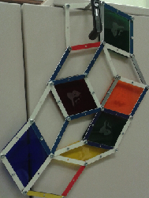

A framework in 2D consists of a set of edges in the Eucliden plane that are joined at vertices. For our puporses, all of the edges have a fixed length but the angle at the vertex of a joint is allowed to change. Consider a framework that consists of just 3 edges which are joined to form a triangle. It is easy to see that this framework is rigid, the triangle won't change its shape. However if we consider a framework with four edges forming a square, we see that the angles at the joints of the framework may change freely.
For this project we will consider frameworks that come from a piece of a Penrose tiling. We refer to any such framework as a Penrose framework. Penrose tilings are made out of two types of rhombi, a skinny one and a fat one. A face(i.e a rhombus) in the framework can be made rigid by not allowing the angles at the joints to change and by fixing them to be the angles of a fat or skinny rhombus. We will refer to the operation of rigidifying a face of the framework as bracing the face. If the framework has no braced faces, it can move freely and all of the faces can change their shapes. If we brace all the faces of the framework then the only possible motion of the framework is a rotation as a whole body. What would happen if we only brace certain faces? Will the framework be rigid? This is excatly the questions we are intersed in discussing throughout this project. More precisely:For a given Penrose framework in 2D how many and which faces should I brace to make the framework rigid?
Here is a short video explaining the rigidity problem for 2D Penrose frameworks.
One way to model the rigidity problem for 2D frameworks is
to build the frameworks by using rods and joining them at the vertices in such a
way that the angle at a joint may change. For this project we will present how to build acrylic frameworks
by using a laser cutter to make the rods and screws to join them at
the vertices. All you need to do is to follow closely the detailed
instructions
found at the Framework factory.
The end result will look like the following framework:

To get ideas of how to start studying and understanding the rigidity
problem you can go to the
Rigidity Lab .
Another way to model the rigidity problem is to use RTICA's. There are many advantages in the use of RTICA's. For instance, using a computer you are able to consider bigger frameworks. Additionally, thinking about how to model the problem in a computer might give interesting insight on how to solve the rigidity problem for 2D Penrose frameworks.
If you want to find out how to decide if a braced Penrose framework is rigid you can experiment with this version of the Wester Game. Or read our paper here .